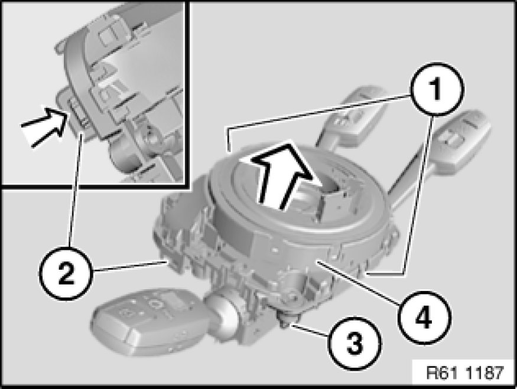
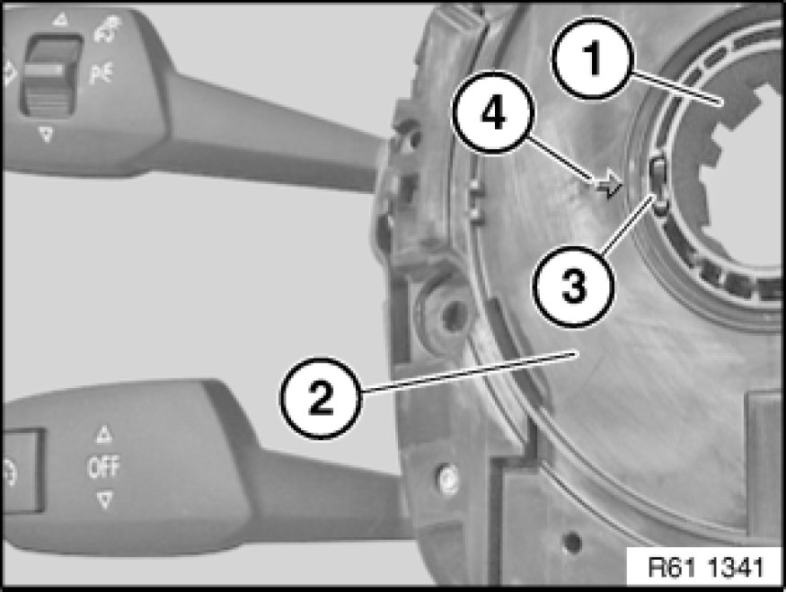
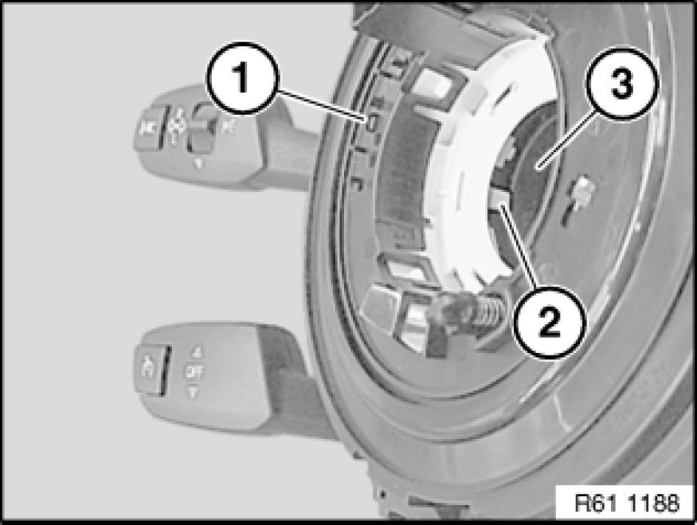

Clockspring Assembly / Spiral Cable: Service and Repair
61 31 011 - Removing and installing/replacing volute spring cassette

Warning!
Move wheels into straight-ahead position and do not alter this position during the repair work.

Necessary preliminary tasks:
- Remove fixture for steering column stalk Service and Repair

Unlock catches (1).
Press lock (2) and remove volute spring cassette (4) in direction of arrow from fixture for steering column stalk (3).

Important!
- Do not turn ring (1).
- Also turning ring (1) through 360° is not permitted!
- Secure ring (1) against unauthorized turning (e.g. with adhesive tape).
Installation Note:
Notch (3) on ring (1) must line up with arrow (4) on switch (2).

Important!
Fit volute spring cassette (1) so that guide (2) can slide exactly into associated notch on switch (3).